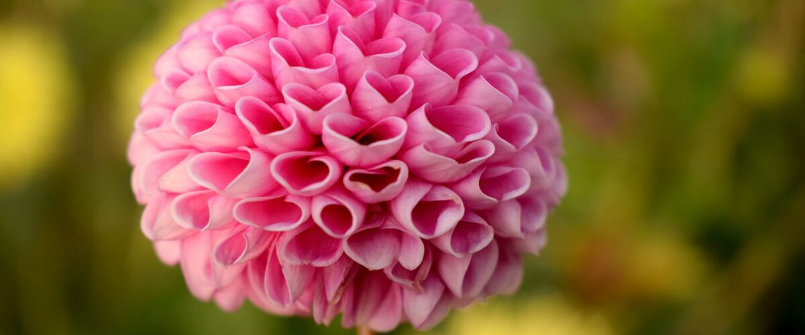

Growing Dahlias in the Northwest
Dahlias thrive in Northwest summers if you get the timing and drainage right. Here's when to plant tubers, how to care for them, and what to do in winter.
Dahlias are some of the most popular flowers in Northwest gardens, and for good reason. Our mild summers suit them, and they bloom from midsummer until the first frost. They come in nearly every color and in sizes from small pompons to blooms as wide as a dinner plate.
When to plant
Dahlias grow from tubers, which rot easily in cold, wet soil. Wait until the soil has warmed, about the same time you'd plant tomatoes. Rainline Garden's planting windows:
- Portland and the west side: May 10 – Jun 7. See Portland's dahlia page.
- Spokane and the inland Northwest: May 20 – Jun 17.
- Bend and the high desert: Jun 9 – Jul 7.
How to plant
- Pick a sunny spot. Dahlias need at least six hours of sun and bloom best with more.
- Make sure it drains. In heavy clay, plant in a raised bed or mix in plenty of compost.
- Put in a stake first for varieties that grow over about 3 feet tall. Placing it now avoids spearing the tuber later.
- Plant the tuber 4 to 6 inches deep, lying on its side with the old stem or any sprouting eyes facing up. Space plants about 18 inches to 2 feet apart, more for the biggest varieties.
- Hold off on water. Unless the soil is very dry, don't water until shoots appear. A wet tuber with no leaves to use the water is the one most likely to rot.
Summer care
- Protect the shoots from slugs. Young dahlia shoots are a favorite. See dealing with slugs.
- Pinch for more flowers. When the plant is about a foot tall, pinch out the center tip just above a set of leaves. It branches out and produces more stems.
- Water deeply once plants are growing, about once or twice a week in dry weather.
- Tie stems to the stake as they grow.
- Cut often. Cutting flowers and removing spent blooms keeps new buds coming. Cut in the cool of the morning, and pick blooms that are almost fully open, since dahlias don't open much more once cut.
What to do in winter
A frost blackens dahlia foliage and ends the season. What comes next depends on where you live.
- West of the Cascades: in well-drained soil, many gardeners cut the stems down and leave the tubers in the ground under a thick layer of mulch. In heavy or soggy soil, they often rot over a wet winter, so digging them up is safer.
- East of the Cascades: winters are too cold for tubers in the ground. Dig them after the first frost.
To store dug tubers, shake off the soil, let them dry for a few days somewhere sheltered, then pack them in slightly damp wood shavings, peat or vermiculite. Keep them somewhere cool but frost-free, around 40 to 50°F, and check them during winter for any that are rotting or shriveling.
Dahlias also feed bees late in the season, especially the open-centered single types. For more on that, see planting for pollinators.